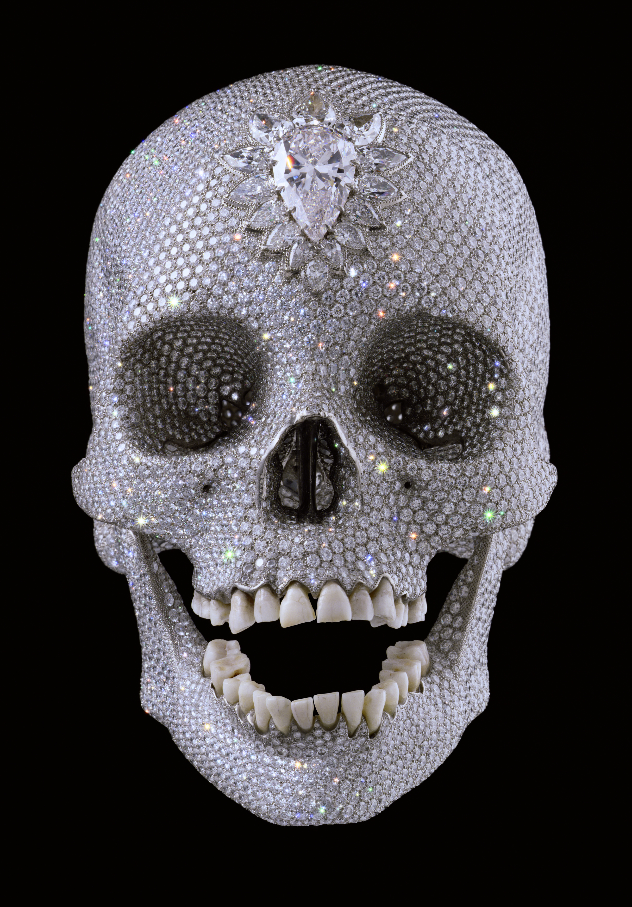
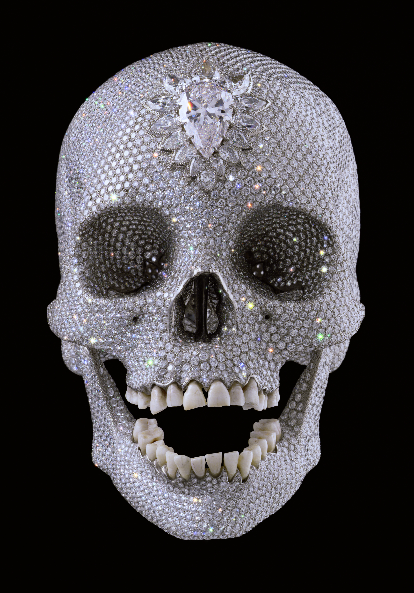
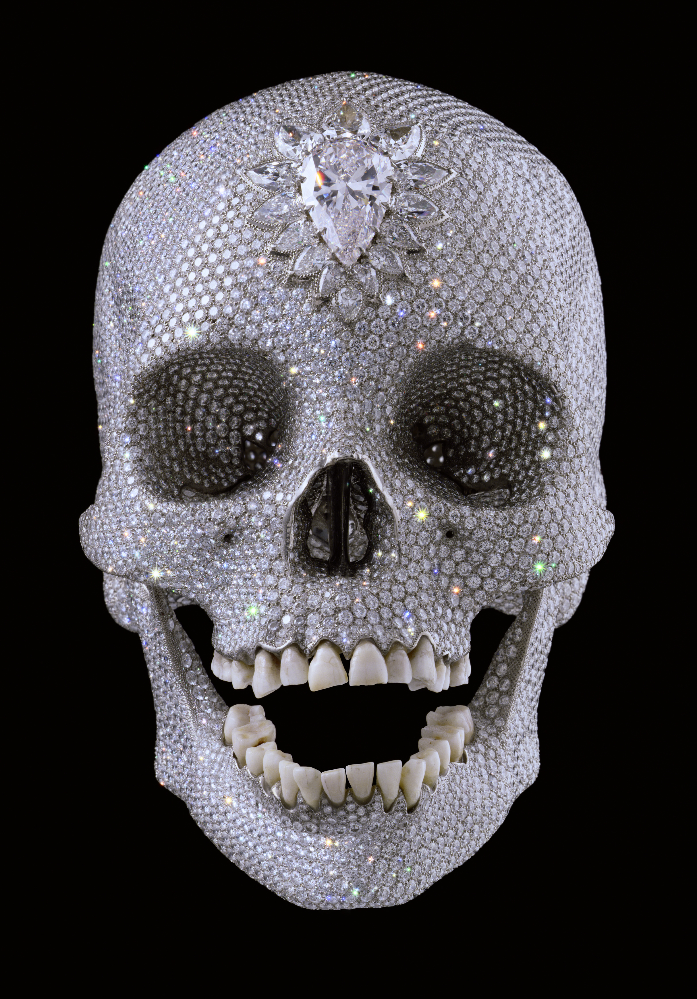

.jpg)
 

.jpg)


ART IS QUITE USELESS
...
Chapter II
From the beginning of Western civilization aesthetic theory has been developed, enriched and motivated by thinkers, philosophers, and artists. They have seen the experience of beauty as an appeal to the sublime. Plato, writing in Athens in the fourth century BC, argued that beauty is the sign of another and higher order. “Beholding beauty with the eye of the mind”, he wrote, “you will be able to nourish true virtue and become the friend of God.” (Plato, Symposium) . At any time before twenty century if you asked educated people to describe the aim of poetry, art or music, they Beauty remained a value, as important as truth and goodness. Then in 20th century aesthetics increasingly stopped being important and art has become in many cases a pure, self-oriented originality achieved by whatever moral costs it takes. Anything has a right to be called an art today, whereas art has an obvious impact on individual. Art does not express the divine no longer, but simply follows massive “commune” often for a sake of self advertisement and enrichment. We experience a big pressure of an image imposed by media and pop culture that makes us rethink and change in certain way not just our physical surroundings, but our acts values, music, manners, even language becoming progressively poorer and more callous.
This is a paragraph.
This is another paragraph.
I am certain that beauty is not just a subjective thing, but an objective universal need, indeed interpreted differently by every individual, yet has some characteristics that are inherent for human commonly (An idea explored further in chapter 2). The great artists of the past were aware that human life is full of chaos and suffering. But they believed that the remedy for the bitter reality could be found in art. The genuine work of art brings consolation in sorrow and assertion in joy. It shows human life to be worthwhile. Many modern artists have become weary of this sacred task. The randomness of modern life, they think, cannot be redeemed by art. Instead it should be displayed. Of course an ancestor of today’s observed conceptual arts could be rightly and submitted it for an exhibition. His gesture was satirical, designed to mock the world of art and the snobberies that go with a confirmation that anything can be art like a can of excrement (Piero Manzoni: Artist’s Shit, 1961) or Images like by Andres Serrano’s Piss Christ (1987) and Robert Mapplethorpe’s Jim and Tom, Sausalito (1977) (which showed one man urinating into another man’s mouth) even a pile of bricks by Carl Andre proudly referred as an art piece. In such cases, art does not have any sacred status, neither attempts to rise us higher, nor conveys moral or spiritual values, instead It becomes a human gesture among others; as meaningful as a laugh or a shout. Art used to be a cult of beauty in the past, nowadays it often seem to encourage cult of ugliness instead.’ (Roger Scruton, Beauty matters) Notice how people who look for beauty in art seem to be just out of touch with modern realities. Nevertheless, the art world understandably is a highly competitive place, and artists need any edge they can get, including a shock value to be recognized. But what is shocking first time round is boring and vacuous when repeated. In other hand getting back to Duchamp’s Urinal it has never meant to be beautiful. But that doesn’t mean it doesn’t stimulate our imagination. Stimulate the imagination could be called a key to what art seeks to do nowadays. Duchamp felt that art had become too interested in technique. His reason for making an artwork was a denial of all of the things that people saw in art previously in order to explore a central question of art that in his opinion was laying somewhere else than beauty, rarity and skill. Duchamp himself had no idea how influential the discovery he had stumbled upon would become – a statement that a work of art is a work of art because we think of it as such. ‘He took an ordinary article of life, placed it so that its useful significance disappeared under the new title and point of view - created a new thought for that object.' The Blind Man, New York, no.2, May 1917, p.5.) A defender of conceptual art may argue that an idea of certain artwork can be beautiful and there is nothing wrong in perceiving conceptual art from this perspective. It allows people to see the world in which they are living in presence, an abstract world that isn’t ideal, but the world as it is, some better place but of the here and now that teaches how to be and leave more at ease with it. But to take a look at an example of Eugene Delacroix’s bed (Un Lit Defait, 1827) , It displays the artist’s bed in all its disorder. He too is bringing up the world as it is with all its vanity and personal emotional chaos. But the bed is transformed by the creative act to become – a symbol of the human condition and one which makes a

ART IS QUITE USELESS
...
Chapter II